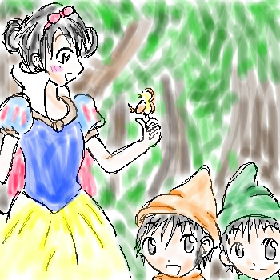
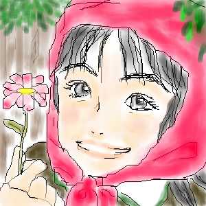

あんまりに嬉しかったので、全作品掲載させて下さいね♪
今回は管理人の絵も混ぜて、ストーリーごとに載せたいと思います。
白雪姫



October.2002
左から『里穂in白雪姫』by羊狸さん／『七世姫と志穂魔女』byぎたれれさん
下『ちひろ姫と山熊小人』byさやかさん
勝手に命名させて頂きました。すみません。
童話の王道白雪姫。私も大好きなお話です♪
それぞれ主人公は違いますが、どれもぴったりな感じがしますよね！
里穂は可愛すぎるし、個人的に魔女志穂さんがかなりツボでございます♪可愛い！
小人も、こんな小人が居たらもう、ずっと小人の家で幸せに暮しましたとさ。でいいです！(笑)
本当にありがとうございました！
＿＿＿＿＿＿＿＿＿＿＿＿＿＿＿
ピーターパン
October.2002
左から『志穂ティンク』by管理人／『東奈ピーターパンとマイケルウエンディ』byぶぅびぃさん
下『山元フック船長』byタツミさん
こちらも勝手に命名させて頂きました。
ピーターパン良いですよね！東奈はイメージピッタリです♪
女装男装コンビな二人が似合ってて素敵です。そして山元船長！
いいですよね〜。さらわれたい！(笑)
昔ワニが出てくるのがすごく怖くて泣きそうだった記憶があります。
今は大好きなティンカーベルも、小さい頃は嫌いでしたね。イジワルで。
今はそれが可愛くて仕方ないんですけどね。
思い出せないのですが、ウエンディの二人の弟の名前何でしたっけ？
知ってる方、教えてください！
本当にありがとうございました！
＿＿＿＿＿＿＿＿＿＿＿＿＿＿＿
赤ずきんちゃん

October.2002
左から『ちひろin赤ずきんちゃん』by管理人／『ウルフ卓也』byポカリさん
こちらも勝手に命名させて頂きました。
そういえば、ちーちゃんと卓也ってあんまり私にはコンビのイメージがありません。
なかなか面白いかも。
この狼だったら、食べられてもいい〜！なんて思う私はもうダメ人間でしょうか(笑)。
相手がちーちゃんだと、一瞬にしてウルフの負け、って図が見えてきますね。
この話も昔は怖かったです。今でも原作は怖い…。（ちょっと昔に流行りましたよね。）
ご協力本当にありがとうございました！